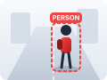
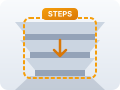
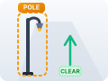
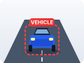
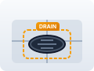
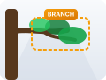
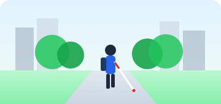

Person on your right. Keep left.
10:24 AM (1 min ago)
See the world with your ears
Next-generation spatial assistive navigation powered by Meta AI for blind and visually impaired individuals.
Built for a more inclusive world
SightGuide needs access to your camera to see and guide you in real time.

Person on your right. Keep left.
10:24 AM (1 min ago)

Steps down ahead. Slow down.
10:22 AM (3 min ago)

Pole on left. Keep right.
10:19 AM (6 min ago)

Vehicle ahead. Stop.
10:16 AM (9 min ago)

Open drain ahead. Keep left.
10:12 AM (13 min ago)
Try SightGuide without an API key.
Use staged scenarios and sample data.

Person
ID: 03
Pole
ID: 07
Step
ID: 12
AI-Powered Accessibility
SightGuide helps blind and low-vision individuals navigate safely using real-time camera vision, AI tracking, and voice guidance.

SightGuide is an assistive guide, not a safety device. Always use a cane, guide dog or a sighted companion.